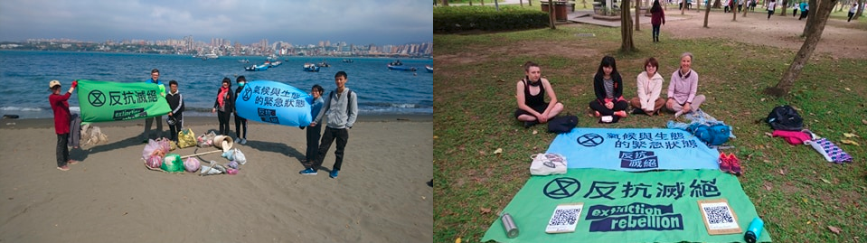

中文
三月愉快！

上個週末我們非常忙碌！我們週六去淨灘，週日在公園裡靜坐。週六參與行動的台灣人比外國人多 - 這是前所未有的。希望未來還能繼續保有這樣踴躍的參與人數！
上次淨灘的時候，有一位反抗者表示，她覺得淨灘其實是在浪費時間，因為海灘會重新佈滿垃圾。她說得蠻有道理的，但我想談談為什麼我們還是要淨灘。淨灘是讓人們涉入的好方式，也很適合讓人攜家帶眷來共同參與。而且人們也可以在淨灘的過程中去討論為何塑膠最後會流落至海灘上
這裡的關鍵在於，去喚起人們對更大議題的覺醒：氣候及生態的緊急狀態。大多數的人並不知道有多少的垃圾最後會流落至海灘。一旦親眼看見，它的震撼效果會大過於被人勸說不要使用塑膠。我們必須從源頭上去停止使用塑膠製品。如果你發現水槽已經滿溢出來了，你不會拿杯子去將水一勺一勺地往外倒，對嗎？你會去把水龍頭關起來。這也是我們在解決全球塑膠問題時必須做的。
然而，我們會繼續從事淨灘活動，因為這是一種間接教育大眾的方式。我個人也是因為參與了淨灘而更關注起環境的問題。
活動預告
在公園靜思冥想
歡迎來參加另一場在公園的美妙的靜思冥想。
日期：2020年3月8日
時間：上午10點
地點：大安森林公園捷運站出口二（外面）
其他的機會
綠色和平目前正在招募一名行動協調者。歡迎對此職缺有興趣且具備相關技能的社運人士去申請！申請者必須會說流利的中文。
此職缺的相關資訊如下：
為了無聲者的匿名人在本週六下午3:30至7點之間在西門捷運站出口六有一項行動。有興趣的人可以在出席我們的聚會之前前往參加。 FB link
下次會議：

我們將於下午五點在大安森林公園捷運站出口二（外面）會合。如果下雨，我們就在捷運站裡面找地方坐。請帶防蚊液！
日期：2020年3月7日
時間：晚上5點到7點
地點：大安森林公園捷運站出口二（外面）
期待下次再會，
反抗滅絕在台灣
ENGLISH
Happy March!
Last weekend, we were very busy! We had a beach clean-up on Saturday and a meditation in the park on Sunday. On Saturday, we had more locals then foreigners- a first! We hope to keep up these great numbers in the future.
One rebel brought up during our last beach clean-up how she felt like doing the clean-ups were a waste of time because the beach would be covered in trash again. She made a very good point and I thought I would discuss why we do beach clean-ups in the first place. Beach clean-ups are a great way to get more people involved and allows for families to come and do something together. It also allows for discussion about why plastic ends up on the beaches.
The key point here is to raise awareness of the bigger issue: the climate and ecological emergency. Most people don't realize how much trash ends up on the beach. Once you see it firsthand; it is more impacting than being told to stop using plastic. We have to stop plastic at the source. If you see the sink is overflowing, you wouldn't start filling a cup of water and pouring it out would you? You would turn off the faucet. This is what we must do to solve the world plastic problem.
However, we will continue doing beach clean-ups because it is a non-direct way to educate the public about the problem. I personally became more aware of the environment thorough doing this.
COMING-UP ACTIONS
Meditation in the Park
Please come and join us for another nice meditation in the park!
Day: 3/8/20 Time: 10am Location:Daan Park MRT Exit 2 (outside)
Other Opportunities
Greenpeace currently has a vacancy for action coordinator. It would be great when there are activists with the right skills that are interested to apply! Fluency in Chinese is neccessary.
You can find the vacancy here
Anonymous for the Voiceless has an action this Saturday next to Ximen Exit 6 from 3:30-7pm. You can go before our meeting if interested. FB link
NEXT MEETING
We will meet at Daan Park Station MRT Exit 2 (outside) at 5pm. We will find a place to sit outside. If raining, we will sit inside the MRT. Please bring bugspray!
Day: 3/7/20 Time: 5-7pm Location: Daan Park MRT Exit 2 (outside)
Until next time,
XR Taiwan